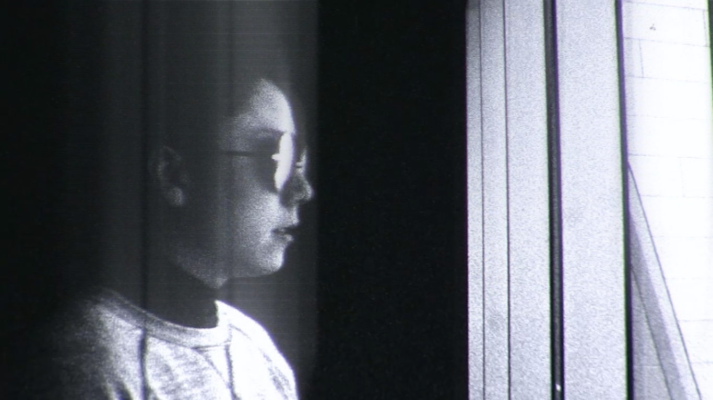
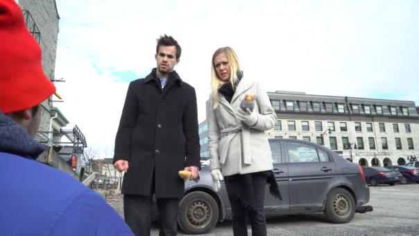

Film
This list includes independent projects, submissions to film festivals, and undergraduate assignments. You can see more of my work on my Vimeo page.
Superposition (2017) dir. Daisy Barrette. Screened at the 2017 Kingston Canadian Film Festival.
Inspired by multiverse theory and quantum physics, Superposition follows a person living in parallel universes as their realities begin to collapse.

Bread or Alive (2017) dir. Daisy Barrette, Brigitte May, Luis Anaya, Nodebe Agbapu, Lilly Nesbitt, Samuel Grant. Winner of Best Picture, Best Cinematography, and Best Use of Theme at the 2017 Focus Film Festival. Screened at the 2017 Kingston Canadian Film Festival.
A pair of buddy cops get into a crusty situation when they bite off more than they can chew while investigating murders in the bakery district.
Helping Hands (2016) dir. Daisy Barrette and Ariana Bascom. Screened at the 2017 Kingston Canadian Film Festival. Originally created for a course at Queen’s University (FILM 352: Production: Form and Structure).
A girl walks into a guitar shop and gets more than she bargained for when she develops an attraction to the boy working behind the counter.
Writings on the Wall (2018) dir. Daisy Barrette, Kaitlin Darbey, Michaela Doyle, Gavin Day, Matt Theriault, Nathan Yee, Tu Yige.
Nominated for Best Picture, Best Supporting Actor, Best Use of Theme, Best Production Design, Best Use of Sound, Best Editing, Best Cinematography at the 2018 Focus Film Festival.
Bad luck drives a superstitious young man to take desperate measures when he discovers his roommate’s secret.